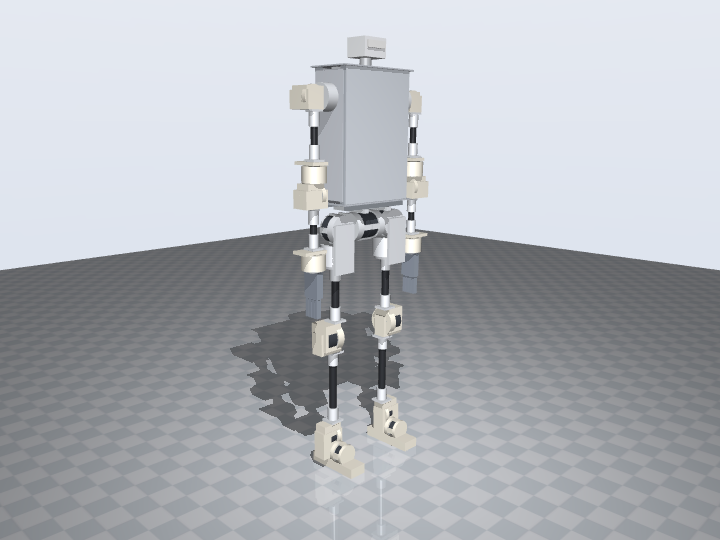
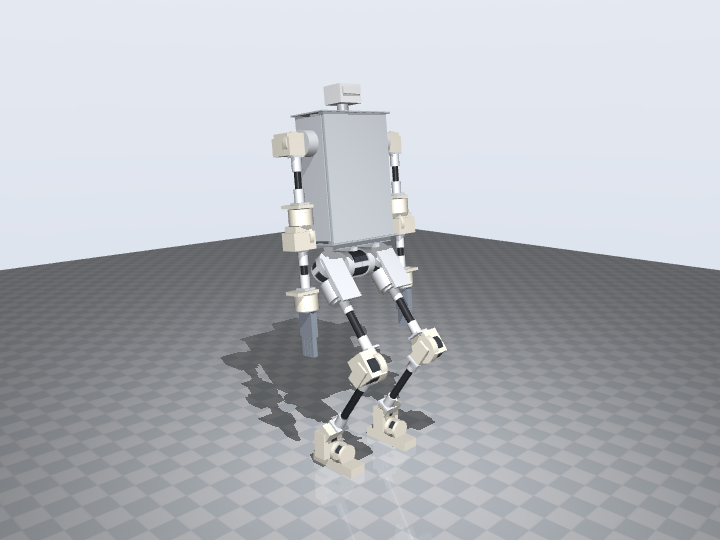
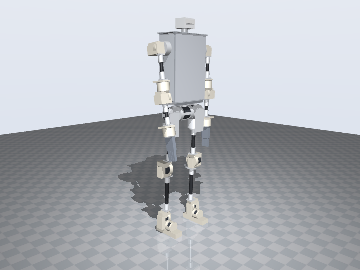

The styled design: Berkeley Humanoid Lite, extended v2, work in progress
The configuration the Berkeley Humanoid Lite paper draws in its Fig. 5: the same robot brought to adult size with carbon-fibre tubes between its actuator modules, a hip arranged as pitch, abduction and rotation, and a dexterous hand. This page builds that figure from BHL's own published printed parts (CC BY-SA 4.0), cut where a tube takes over and re-drilled where a RobStride replaces a printed cycloidal module.
What the paper's figure says, and what this takes from it
Berkeley Humanoid Lite is 0.8 m and 16 kg: 22 joints driven by two sizes of printed cycloidal actuator (ten 6512 modules, twelve 5010 modules), a 2020-extrusion torso, PLA parts everywhere else, under $5,000. Section III.D of the paper shows how the same parts become an adult-sized robot: "extending the leg links with carbon fiber tubes transforms Berkeley Humanoid Lite into an adult-scale platform", with the hip rearranged into the pitch, abduction and rotation order most humanoids use and a dexterous hand on the wrist. The figure keeps BHL's modules, brackets, feet and torso and adds tubes, hip brackets and sockets.
Kept from BHL
Eleven printed part types, listed below with what is done to each: the knee and ankle cradles at the ends of the thigh and shank, the knee yoke, the ankle bracket, the foot with its shoe, the shoulder bracket, the elbow bracket, and the two ends of each arm link. BHL's 6803 yoke bearings and its shoes stay in the bill of materials.
Substituted
RobStride actuators in place of the printed cycloidal modules, by BHL's own size classes: an RS02 where BHL has a 5010, an RS06 where it has a 6512 at the shoulder, an RS03 at the knee, where the 6512 class could not hold the crouch at adult size. Each cradle keeps its channel around the body; its mouth is bored for our mount ring with the output support bearing.
New
The hip stack and pelvis of the figure's inset (pitch in a cup on 2020 bars, abduction on a bracket, rotation hanging under it, all RS03), the 2020 torso with laser-cut plates, four tube socket flanges per side, the hand flange, and the couplers and mount rings of our joint kits. Hands are Pollen Robotics' Amazing Hand; BHL's servo gripper fits the same flange.
Every printed part: whose it is, and what changes
BHL's modules are held in channels at the ends of its arms and closed by front plates with the module's bolt circle; its knee, ankle and elbow are yokes with a second bearing (a 6803 on a stud) in an outer plate. The RobStride mounts by front lugs, so in every cradle the front plate's ring becomes our 12 or 22 mm mount ring, re-drilled to the RobStride's lug pattern, and the channel stays as the collar. Masses are BHL's link masses less their modules, split by surface area; the right side mirrors the left.
| Part | Source | Qty | Mass g | What is done to it |
|---|
Actuators: BHL's classes, RobStride's models
BHL's 6512 module is Ø88 × 65 mm and its 5010 Ø70 × 65, measured from the meshes. The RobStride that sits in each cradle is the one whose body fits the channel: the RS02 (Ø65) in every 5010 cradle, the RS06 (Ø84.5) in the shoulder's 6512 cradle. The knee is the exception. On a 29 kg, 0.95 m-hip robot the crouch loads each knee to about 38 N·m, over the RS06's 36, so the knee cradle is bored from Ø88 to Ø101 for an RS03 and its mouth to Ø114 for the ring; that is the one BHL part whose walls are thickened rather than only cut. The hip stack is new and takes RS03s throughout. Limits are software limits set by the audit.
| Joint | BHL module | Here | Peak N·m | Where it sits | Range ° |
|---|
The tubes
Each cut BHL arm gets an 8 mm printed socket flange bolted to its end, with a boss into which the tube is bonded 40 mm and cross-bolted. The thigh tube hangs from our socket on the hip-rotation output and ends at the socket on BHL's knee cradle; the shank tube joins BHL's knee yoke to BHL's ankle cradle; the arm tubes join the cut plate ends to the flanges that carried BHL's yaw and wrist modules. BHL's segment lengths and the extension each receives:
| Segment | BHL mm | Extension mm | Tube cut mm | Between |
|---|
Self-collision audit
The audit tests every part pair at the zero pose, in six preset poses and through each joint's full range in 13 steps. BHL's pieces are tested by their surface samples against every other part, and by their convex hulls against each other; the parts a cradle or a yoke holds are declared inside it. One coupling remains, the same as the production design's: with the arms hanging straight, the hand reaches the abducting leg's thigh socket from 21°; the default standing pose, with the elbows at 30°, is clear to 45°.
| Check | Result | Note |
|---|
Does it stand? Physics check
The same MuJoCo check as the other designs: a floor, a floating base, one torque-limited position servo per joint with the actuators' own peak torques, no balance controller. One thing this design taught the check: two RS02 ankles at the servo stiffness the budget design uses (80 N·m/rad) are softer than the inverted pendulum they hold (m·g·h is 258 N·m/rad here), and the robot topples at the ankles with no joint error at all. The RS02s are set to 220 N·m/rad, inside RobStride's position-mode range; their 17 N·m limit is what then bounds the push margin.



| Test | What happens | Max tilt | Settled tilt | Busiest leg joint | Result |
|---|
tools/.venv/bin/python tools/bhl_pieces.py # BHL's parts: bhl_pieces.json, assets/geom/v2/*.glb
python3 tools/build_v2.py # robot_v2.json, bom_v2.json, foh_v2_0.urdf
python3 tools/check_collisions.py --model v2 --poses --sweep --steps 13
tools/.venv/bin/python tools/build_parts.py --model v2 # our parts and our additions to BHL's, as STL
tools/.venv/bin/python tools/sim_stand.py --model v2 --render # sim_results_v2.json, framesPrinting it
BHL's parts are printed from BHL's Onshape document (or its MakerWorld plates) with the modifications in the table above applied; the geometry we add to them, the mount rings, cups, studs and the raised foot cradle, is in the STL set as an "additions" file per part, to be unioned in CAD. Our own parts are complete STLs. The full table with masses and orientation is on the printing page.
Bill of materials
Priced , US vendors, beside our v1 production design of the same figure and BHL's own published total. BHL's $4,312 buys the 0.8 m robot with its printed actuators; this design's actuators alone cost nearly that, and arrive assembled.
| Section | Covers | v2 | v1 |
|---|
What this needs next
- The CAD work on BHL's parts. Each kept part is described here by a cut plane, a bore and a bolt pattern; those edits have to be made in Onshape (BHL's document is public; branch it) before the parts can be printed. The knee cradle also needs its walls thickened around the Ø101 bore.
- The socket flanges on BHL's arm sections. The flange bolts to a cut plate end; whether four M4 through a 9 mm PLA plate end carry the shank's bending is the first thing to test on a printed piece.
- The joint-kit test that every design on this site depends on: print one RS03 cup, load it to 60 N·m.
- The yoke bearings. BHL's 6803 stud bearings carry the second side of the knee, ankle and elbow; at adult size the stud is Ø17 steel. Check the outer plate's pocket on the printed yoke.
- A walking policy. BHL publishes its Isaac Lab training environment under MIT; this URDF has the same joint names and order as our v1, so the same path applies.
- The skin. A 1X-style soft cover over this skeleton, patterned over the swept volumes with the joint ranges above as the constraint.